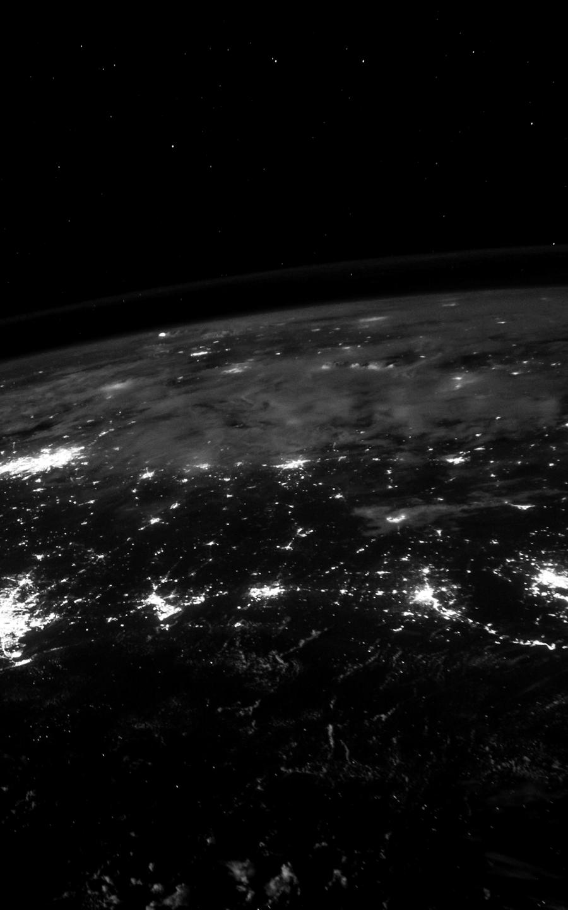
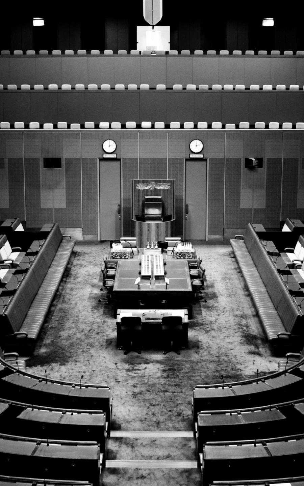
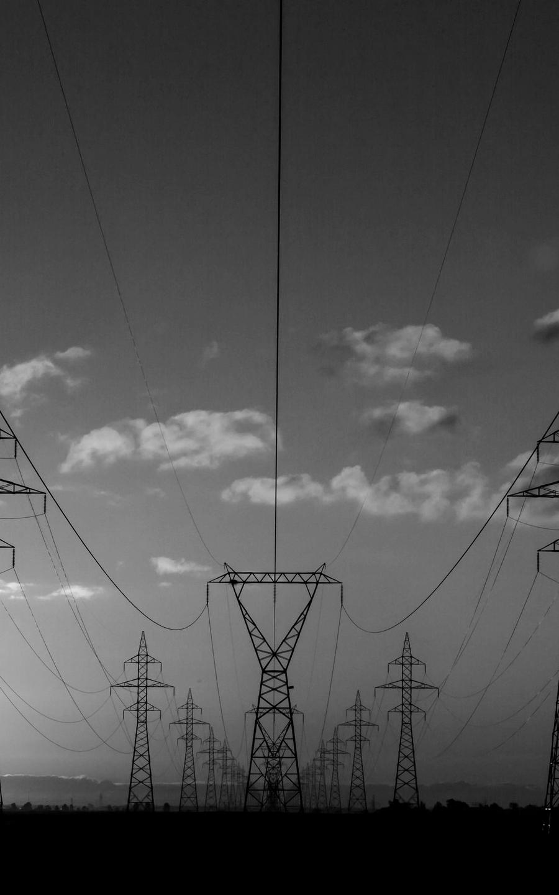
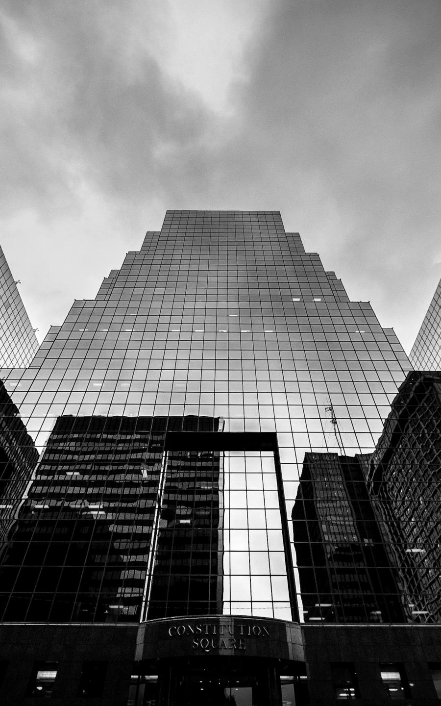

01
Defensa y seguridad
Mando y control, análisis de inteligencia y protección de capacidades críticas.
Enfoque
Inteligencia artificial, seguridad y software para organizaciones en las que una decisión tardía o un dato expuesto tienen consecuencias reales. Un solo equipo. Responsable de todo.
Capacidades
Modelos que analizan, anticipan y recomiendan, entrenados con sus datos y desplegados allí donde están.
Protección de infraestructuras, redes y personas: de la detección temprana a la respuesta coordinada.
Mando, control y gestión de la misión en entornos exigentes, con conectividad limitada y requisitos estrictos.
Sistemas a medida para operaciones críticas: fiables, auditables y preparados para crecer.
Procesos que funcionan solos y bajo control. Menos errores, más velocidad y trazabilidad completa.
Qué hacer, en qué orden y con qué riesgos. Acompañamos a la dirección del diagnóstico al presupuesto.
Modelos que analizan, anticipan y recomiendan, entrenados con sus datos y desplegados allí donde están.
Protección de infraestructuras, redes y personas: de la detección temprana a la respuesta coordinada.
Mando, control y gestión de la misión en entornos exigentes.
Sistemas a medida para operaciones críticas: fiables, auditables y preparados para crecer.
Procesos que funcionan solos y bajo control.
Qué hacer, en qué orden y con qué riesgos.
Despliegue soberano
En sus centros de datos, en entornos aislados o en la nube que elija. Bajo su control y su jurisdicción.

Arquitectura auditada de principio a fin.
Cada componente se documenta, se prueba y se revisa antes de entrar en producción.Por qué HALVEX
Otra forma de trabajar
01Responsabilidad
Un único equipo responde de todo, del primer diagnóstico al sistema en producción.
02Datos
Sus datos no salen de su infraestructura ni de su jurisdicción.
03Decisiones
La tecnología propone. Ninguna decisión crítica es automática.
04Rigor
Cada sistema se diseña, se prueba y se audita antes de llegar a producción.
05Discreción
Confidencialidad absoluta. Nunca citamos a un cliente.
Sectores

Mando y control, análisis de inteligencia y protección de capacidades críticas.

Servicios digitales seguros, gestión de emergencias y soberanía del dato.

Protección de redes, plantas y sistemas industriales.

Detección de fraude, cumplimiento normativo y continuidad del negocio.
Automatización de operaciones, mantenimiento predictivo y trazabilidad.
Datos clínicos protegidos y apoyo a la gestión hospitalaria.
Método
2–4 semanas
Partimos de todo: la misión, los datos, los sistemas existentes y los riesgos. Nada se descarta antes de entenderlo.
4–8 semanas
Ordenamos lo que importa en una arquitectura, un prototipo funcional y un plan con hitos y costes cerrados.
Según alcance
La estructura toma forma en su entorno, con pruebas en cada fase y un único equipo responsable.
Continua
Todo converge en un sistema preciso, auditado y mejorado cada día mientras está en producción.
La misión, los datos, los sistemas y los riesgos.
Arquitectura, prototipo y plan cerrado.
En su entorno, con pruebas en cada fase.
Soporte, auditoría y mejora continua.
Compañía
Una persona de HALVEX responde ante usted de todo el proyecto, de principio a fin.
Quien diseña su sistema es quien lo despliega y quien lo mantiene.
Limitamos los encargos para conocer a fondo cada organización y responder cuando hace falta.
Cuéntenos el reto.
Cuéntenos el reto. Un responsable de nuestro equipo le contestará para concertar una primera reunión confidencial.